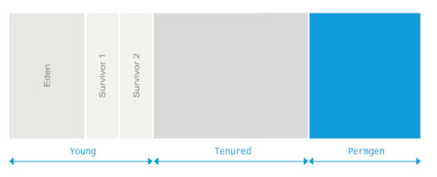

标题
java.lang.OutOfMemoryError:Permgen space
前言
本文翻译自 https://plumbr.io/outofmemoryerror/permgen-space
OverView
Java应用程序仅仅被允许使用有限的内存。当应用启动的时候，你的应用就确定了可以使用的内存量。为了让事情更复杂，Java内存分为下面的图中可以看到的不同的地区：

这些区域包括permgen区域，都在JVM启动时，被设置了。如果你没有设置这些，那么将会采取平台默认值。
当抛出错误java.lang.OutOfMemoryError: PermGen space时，这表明了永久带的内存被耗尽了
Permanent Generation’s area in memory is exhausted.
What is causing it?
为了理解什么样的错误会导致java.lang.OutOfMemoryError: PermGen space，我们需要知道什么样的对象会使用这片内存区域。
实际上，永久带主要将类的声明加载和存储放到了PermGen。这包括了类的名称和类的字段，带有字节码的方法、常量池信息、类关联的对象数组和类型数组以及编译器优化。
从以上定义可以推断，永久代大小要求取决于加载的类的数量以及此类声明的大小。因此我们可以说，导致java.lang.OutOfMemoryError: PermGen space错误主要是加载了太多的类或者加载了太大的类在永久带。
the main cause for the java.lang.OutOfMemoryError: PermGen space is that either too many classes or too big classes are loaded to the permanent generation
Give me an example
Minimalistic example
如上文所述，PermGen空间的使用是和加载到JVM类的数量有密切关系的。以下代码是最常见的例子：
1 | import javassist.ClassPool; |
这个例子中运行时循环创建类，这些类的生成由javassist library提供了。
启动上面的代码中会不断生成新的类，其定义加载到Permgen空间，直到充分利用了此空间。直到充分利用空间java.lang.OutOfMemoryError: Permgen space.
Redeploy-time example
对于更复杂和更实际的应用，让我们来查看下，通过java.lang.OutOfMemoryError: Permgen space错误产生在服务重新部署时。当你重新部署这个服务器的时候，你期望GC会去除持有以前加载所有类引用的类加载器，并且能够替换为一个加载这些新类版本的新类加载器。
不幸的是，许多第三方库和资源处理不善，如线程、JDBC驱动程序或文件系统处理使得卸载先前使用的类加载器不可能。这意味着在每个部署期间，所有类的早期版本仍将驻留在永久代在每个部署期间生成几十兆的垃圾
during each redeploy all the previous versions of your classes will still reside in PermGen generating tens of megabytes of garbage during each redeploy.
让我们想象一个示例应用程序，它使用JDBC驱动程序连接到一个关系数据库。当应用程序启动时，初始化代码将加载JDBC驱动程序连接到数据库。根据响应的规范，JDBC驱动将会自己注册* java.sql.DriverManager。这个注册包括了存储了一个包含DriverManager*静态字段的驱动实例。
现在，从应用服务器中部署应用程序时，java.sql.DriverManager将仍然持有这个引用。我们最终会有一个存活的驱动类实例。这个驱动类这反过来又包含对java.lang.Classloader的引用去加载这个应用程序。这意味着Garbage Collection算法不能回收这个区域。
java.lang.ClassLoader将仍然引用着应用程序所有的类，通常在永久代占领几十兆。 这意味着它将采取一点点重新部署，以填补一个通常大小的永久代空间，最后你将在你的日志中看到java.lang.OutOfMemoryError: PermGen space错误。
What is the solution?
- Solving initialization-time OutOfMemoryError
当应用程序运行时，OutOfMemoryError由PermGen耗尽触发时，解决办法很简单。应用程序仅仅需要更多的空间去加载所有的类在PermGen中，我们仅仅需要去增加它的尺寸就好。改变你的应用程序启动配置和添加-XX：MaxPermSize参数与以下示例类似：1
java -XX:MaxPermSize=512m com.yourcompany.YourClass
上述配置会告诉JVM，永久代将增长到512MB，在程序开始溢出内存错误之前。
- Solving redeploy-time OutOfMemoryError
可以采取使用Plumbr软件，如果不能使用Plumbr那些的，替代品也可以。为此，应继续按照堆转储分析一样，在一个部署后，生成堆转储命令与此类似：1
jmap -dump:format=b,file=dump.hprof <process-id>
然后打开转储您最喜欢的堆转储分析(Eclipse MAT为那是一个很好的工具)。在分析器中，可以查找重复的类，特别是加载您的应用程序类。从那里，你需要对所有的类加载器的进展，以找到当前活动的类加载器。
为非活动的类加载器，您需要确定参考阻止他们被垃圾收集通过收集到的垃圾回收根节点的最短路径从非活动的类加载器。配备这些信息，您就找到了根源。在案件的根源是第三方库中，您可以继续谷歌/堆栈溢出，看看是否这是一个已知的问题得到一个修补程序或解决方法。如果这是您自己的代码，你需要摆脱违规参考。
- Solving run-time OutOfMemoryError
另一种方式再次为那些无法使用Plumbr也都是可用的。在这种情况下，第一步是检查是否从永久代GC允许卸载类。标准JVM在这方面是相当保守的–类天生就会永远活着。所以一旦装入，类留在记忆里，即使没有代码使用他们了。当应用程序创建动态很多类和生成的类不需要长时间时，这会成为一个问题。在这种情况下，允许JVM卸载类定义可以是有益的。这可以通过只是一个配置参数添加到您的启动脚本：1
-XX:+CMSClassUnloadingEnabled
默认情况下此选项设置为false，以便这一点，你需要在Java选项显式设置以下选项。如果启用CMSClassUnloadingEnabled，GC也会打扫永久代和删除不再使用的类。请记住，此选项只能在UseConcMarkSweepGC也启用时，使用下面的选项。所以在运行时，ParallelGC或者，上帝保佑，串行GC，确保你有你的GC设置为CMS通过指定：
1 | -XX:+UseConcMarkSweepGC |
在确保类之后，可以卸载和问题仍然存在，应继续按照堆转储分析–获取的堆转储一个类似于以下命令：
1 | jmap -dump:file=dump.hprof,format=b <process-id> |
然后打开转储文件与您最喜爱的堆转储分析(例如。日食MAT)和进步，以找到最昂贵的类加载器加载的类的数量。从这样的类加载器，您可以继续提取装入的类和排序这样的类的实例有嫌疑人的列表顶部。
每一个猜想，您需要手动回您的应用程序生成这些类的代码跟踪的根源。